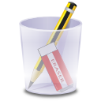

PaintMeister
Menu
⇦
⇨
(x
)
✏
:
小
大
:
？
✒
✥
✑
50
新規作成
キャンバスのサイズ
幅 ：
600
高さ：
400
指定できる最大サイズを現在のウィンドウになるべくおさまるようにする
作成
プロジェクトファイルを開く
ファイルの場所：
開く
Clear
New
Save
Save as Project
使い方ヘルプ
カラーパレットを保存する
パレット0
パレット1
パレット2
保存・読み込み用：
拡大率
25%
50%
100%
150%
200%
400%
レイヤー操作
+
-
名前:
表示
不透明度

消しゴム
塗りつぶし
読み込んでいます...
キャンセル